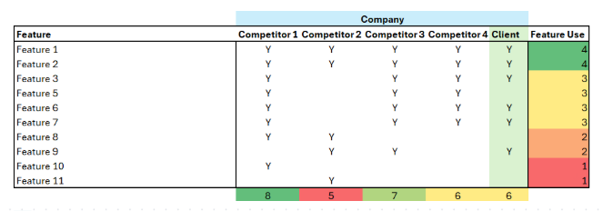
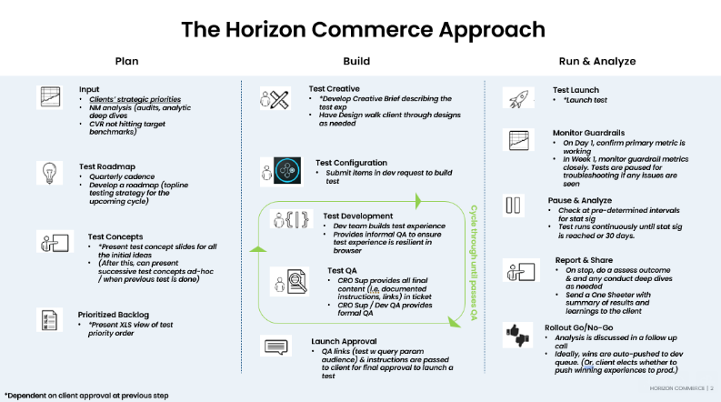

CRO Insights
Practical thinking on experimentation, measurement, and conversion strategy — from 250+ tests in the field.

How I Measure CRO Program ROI (With Real Numbers)
A step-by-step look at the exact methodology I use to calculate true program ROI — including correlation analysis, linear regression, and a depreciation curve.
Read post
The 5 Most Common CRO Mistakes I See on Healthcare Sites
From broken trust signals to impenetrable form flows, here are the patterns that consistently kill conversions on health and insurance sites.
Read post
Why Your A/B Test Win Rate Doesn't Matter (And What Does)
Win rate is the vanity metric of experimentation. Here's what to measure instead — and how to think about program-level impact.
Read post
How I Use Personalization to Lift Conversion Rates
Personalization only works when it addresses specific, known user needs. Here's how I identify the right moments and audiences to target.
Read post
CRO for E-Commerce vs. Lead Gen: Key Differences
The psychology of buying a product online is fundamentally different from filling out a lead form. Here's how I adjust strategy for each.
Read postWant results like these for your site?
Schedule a free strategy call and let's talk about your conversion program.
Schedule a free strategy call